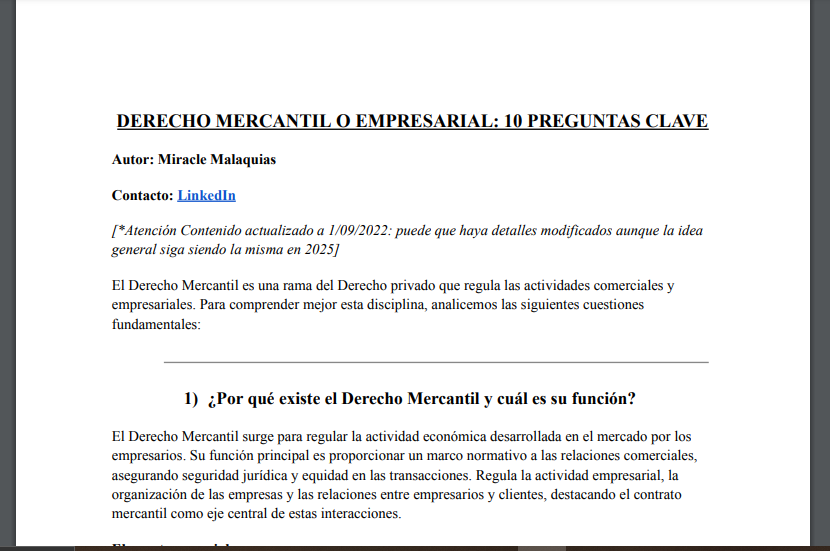

Document 1: Commercial Law-10 key ideas. (spaninsh content)-.
Overview of ten key aspects of Spanish Commercial Law, with a focus on practical applications. (9 pages)
Overview of ten key aspects of Spanish Commercial Law, with a focus on practical applications. (9 pages)
Case-based analysis of the Data Processor, a key role recognized under the GDPR. We break down its rights and limitations in a realistic scenario.
"Brief explanation of a well-known cyber attack (DDoS), including its concept, consequences, and guidance on how to respond (2 pages)."